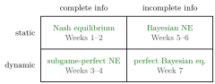

Game Theory¶
Definition¶
Game theory is the mathematical study of decision making in a strategic environment: a situation with several decision makers, called players, in which the outcome for each player depends not only on his or her own choice but also on the choices of the others.
A game is specified by
- the set of players ;
- the strategies available to each player, a set for player ;
- each player's payoff from every combination of choices, a payoff function ;
- the timing of moves and what each player knows when choosing.
Non-cooperative game theory, the approach used here, models every player as a rational agent who chooses individually; there are no binding agreements between players.
Interpretation¶
A single-person optimization model fixes everything except the decision maker's own choice. In a strategic environment part of the "environment" consists of other optimizers, so the best choice depends on what one expects the others to do, while they reason in the same way about oneself. This interdependence is what distinguishes a game from a decision problem.

The figure arranges the classification in the Key Results. The rows separate static games, in which no player observes another's choice before choosing, from dynamic ones; the columns separate games whose payoffs are common knowledge from games with private information. Each cell names the solution concept used for that class and the weeks of the course that treat it.
"Game" does not mean recreation: markets, auctions, elections and negotiations are games. Conversely, many agents do not by themselves make a situation strategic: a price-taking firm in a large competitive market treats the price as given, so it faces a decision problem, not a game.
A solution concept is a rule that predicts which strategy combinations will be played. Concepts differ in what they assume about rationality, knowledge and beliefs: iterated elimination of strictly dominated strategies uses only common knowledge of rationality, whereas Nash equilibrium also requires correct beliefs.
Key Results¶
- Games are classified by timing (static: no player observes another's choice before choosing; dynamic: some moves are observed) and by information (complete: the game, including all payoffs, is common knowledge, so every player knows it, knows that the others know it, and so on; incomplete: some players hold private information). This gives four classes.
- Static games of complete information are written as normal-form games and solved by dominance arguments and Nash equilibrium (Weeks 1–2).
- Dynamic games of complete information use the extensive form and subgame-perfect Nash equilibrium (Weeks 3–4).
- Static games of incomplete information are Bayesian games solved by Bayesian Nash equilibrium (Weeks 5–6); dynamic games of incomplete information use perfect Bayesian equilibrium (Week 7).
- Individually rational choices need not give a collectively good outcome: in the Prisoner's Dilemma the unique equilibrium is not Pareto efficient.
Examples¶
Firms. In a Cournot duopoly two firms choose quantities, and the market price depends on total output. Each firm's profit therefore depends on its rival's quantity: a strategic environment, and a static game of complete information when costs and demand are common knowledge.
Classification. Chess is dynamic with complete information: the rules and payoffs are common knowledge, and in addition each player sees every earlier move (perfect information, a stronger property). A sealed-bid auction in which each bidder privately knows her own valuation is static with incomplete information. The market for lemons, in which only the seller knows the quality of the car, is a game of incomplete information.
Not a game. A monopolist choosing output against a known demand curve, with consumers taking the price as given, solves a single optimization problem; no other player's choice enters its profit.
Prerequisites¶
Related Concepts¶
Sources¶
- Game Theory · Week 1
Aliases: Strategic Environment, theory of games Keywords: strategic interaction, non-cooperative game theory, players, strategies and payoffs, static and dynamic games, complete and incomplete information, solution concept, Prisoner's Dilemma Symbols: element of
Last updated: 17 October 2026 21:53
Game TheoryCommon KnowledgeStatic Game of Complete InformationRational AgentOptimization ModelNash EquilibriumExtensive-Form GameBayesian Game